Published April 7, 2026

This is a story about how we got to where are we are now in British politics.
It begins in 1947, when a thirty-one year old man named David Stirling was out of a job. He had founded the SAS in the Western Desert by writing a memo and walking into a general's office uninvited. But it had now been disbanded by Attlee's government. The war was over. The state no longer required private armies.
Stirling did not take this well.
He was a particular kind of Scotsman — tall, aristocratic, genuinely courageous, and absolutely convinced that the rules that governed other people did not apply to him. In the war, this had made him a hero. In peacetime, it made him restless and dangerous. Here is a picture of the man.
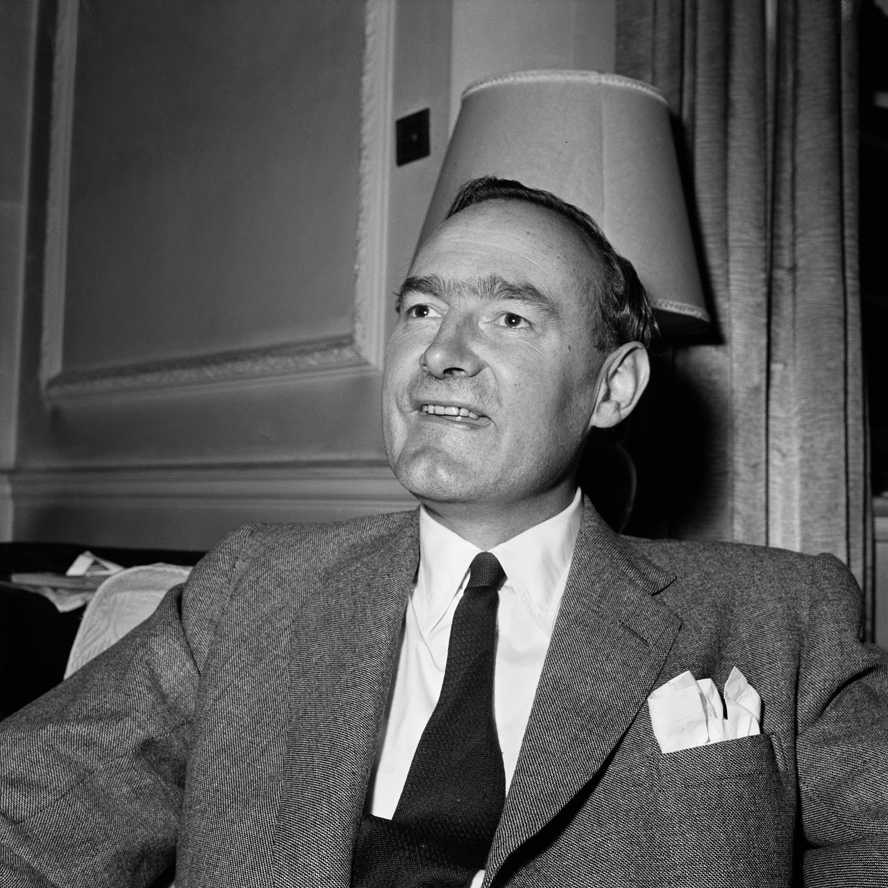
By the late 1950s, he had come up with an idea to resuscitate the SAS. Nasser was threatening the old order across the Middle East. He was a popular nationalist who spoke directly to ordinary people and told them the oil beneath their feet belonged to them and not the British. This was intolerable to Stirling and, since he was friends with the Saudi ruling family, he knew this was intolerable to them too. So he flew to Saudi Arabia and offered them a solution. He would send his own men — trained SAS soldiers with the most elite experience of warfare — to Yemen, to fight a covert war that the British state officials were refusing to fight.
The Saudis agreed and sent him funding for his expedition. This has become the founding moment of the modern private military industry. What Stirling had made clear through this shadowy deal was that the functions of the state could be purchased by whoever had money, and carried out by men who were accountable to no parliament and no electorate. Stirling had taken the most extreme power the state possesses — organised violence — and made it available on the open market.
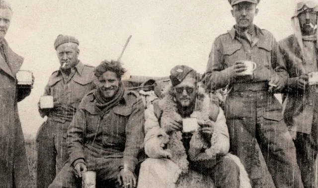
The companies Stirling founded — WatchGuard International among them — were the prototype. By the 1990s, firms like Executive Outcomes were deploying thousands of soldiers across sub-Saharan Africa, winning wars for governments and mining companies simultaneously. By the 2000s, corporations like Blackwater had become so embedded in American foreign policy that they were, functionally, a second army — one that answered to a CEO rather than a general, and to a contract rather than international law.
It is worth remembering what happened in the places these men operated. In Abu Ghraib, private contractors sat in on interrogations. In Sierra Leone, Executive Outcomes secured diamond concessions as partial payment for military victory. In Iraq, Blackwater employees shot seventeen civilians in Nisour Square and most of them were never meaningfully prosecuted. These were not aberrations. They were the logical outcome of removing the accountability that comes with public office.
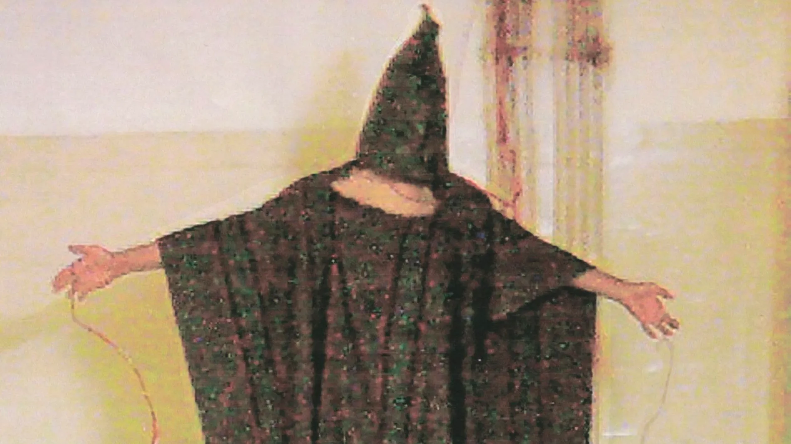
Stirling died in 1990, a year after the Berlin Wall fell, knighted, celebrated, his portrait in the SAS museum. He never faced a criminal charge. He gave interviews in which he spoke about honour.
By the time Tony Blair left office in 2007, his approval ratings were in the low twenties. The Iraq War had destroyed his reputation in Britain. There was, it seemed, nowhere left to go.
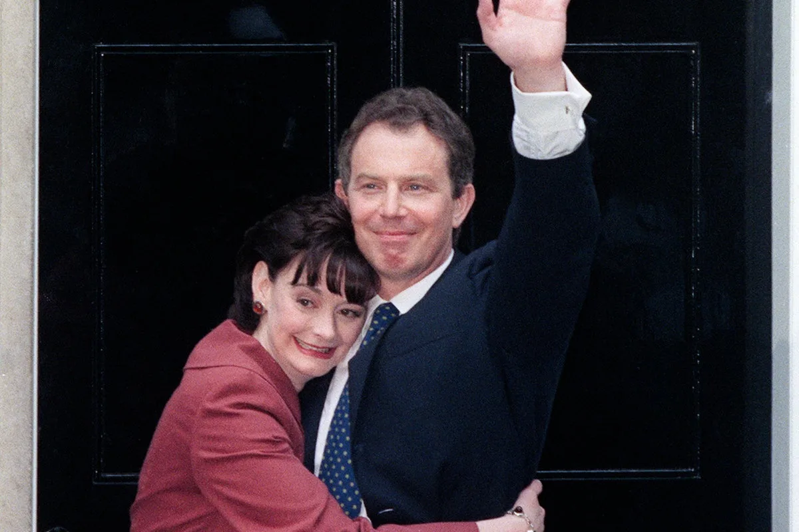
But Blair had also noticed something. The world was full of governments — autocracies, petrostates, emerging democracies, aspiring technocracies — that wanted the prestige and the methods of Western governance without any of its inconveniences. They wanted to be seen to modernise. They wanted the language of reform and the structures of credibility. And they were willing to pay.
The Tony Blair Institute for Global Change now employs over eight hundred people. It operates in more than thirty countries. It has advised the governments of Rwanda, Saudi Arabia, Kazakhstan, Serbia, and Albania, among many others. It has an office in Downing Street under the current government. Blair himself has access to Keir Starmer in ways that no elected backbencher can match.
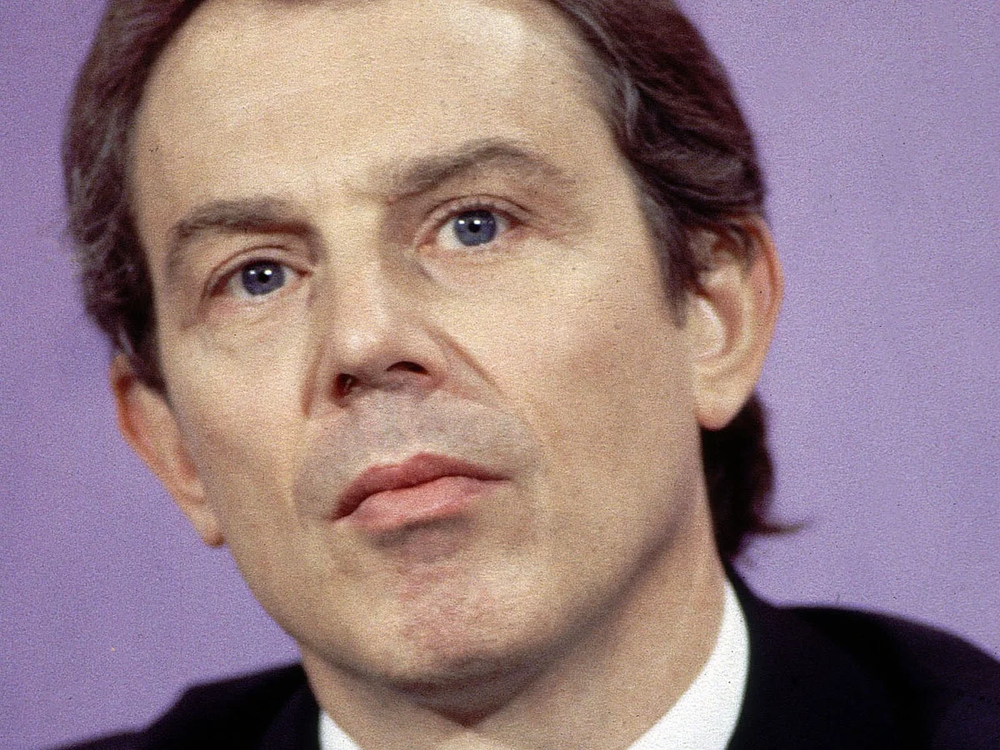
The young people who work for the Institute are graduates from top universities. They write and tweet about impact and systems change. They fly to Kigali and Riyadh and Tirana with their laptops, to advise ministers in governments their own government cannot officially be seen to endorse too warmly. They are, in their way, the colonial administrative class — the district commissioners, the ICS officers — reimagined for an era in which empire can no longer be spoken about directly. They are not employees of the Crown. They answer to Blair.
Empire, in its final privatised form, no longer requires a flag or a gunboat. It requires a well-designed website and a good relationship with the head of state.
What Blair understood — and what Stirling had understood fifty years before him — was that the state's functions are separable from the state itself. Stirling took the military. Blair took foreign policy and governance. Both created private companies that do, for money and at their own discretion, what governments are supposed to do: project power, shape other countries, install systems of administration.
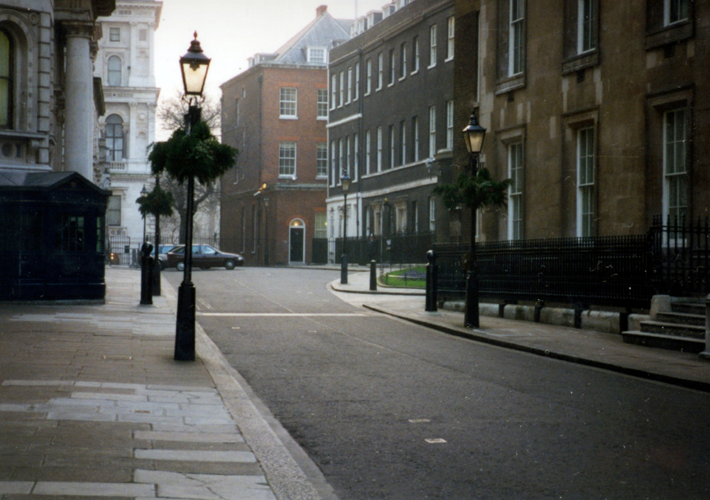
The difference is that nobody dies directly as a result of Blair's advice anymore. The violence, when it comes, is structural and slower — the reforming government that concentrates power while implementing IMF-approved digital ID schemes, the autocrat who uses the language of modernisation to legitimise a crackdown, the small country that finds itself dependent on a network of advisors it did not elect and cannot remove.
The latest example of this is a scandal revealed by The Byline Times on work Blair's institute has been pushing to support Trump's war on Iran. It is very detailed and worth carving out the time to read in full.
Stirling's precedent took thirty years to metastasise into Blackwater. Blair's is younger. The question is what it becomes when the next person — less intelligent, less careful, less restrained by the residual instincts of someone who was, however disastrously, once a democratic politician — decides to copy the model. The infrastructure exists. The clients are waiting. The only requirement, again, is the ability to pay.
---------------
The second story begins in 1971, when the father of gozo journalism, Hunter S. Thompson, covered the Mint 400 desert race in Nevada. He filed a piece for Sports Illustrated that they refused to publish because it contained almost nothing about the race. What it contained instead was Thompson himself — his fear, his pharmacological experiments, his contempt for the people around him, his genuine and mounting terror that the American dream had curdled into something grotesque.
The piece became the excellent book Fear and Loathing in Las Vegas, and it is filled with lots of fantastic illustrations by Ralph Steadman.
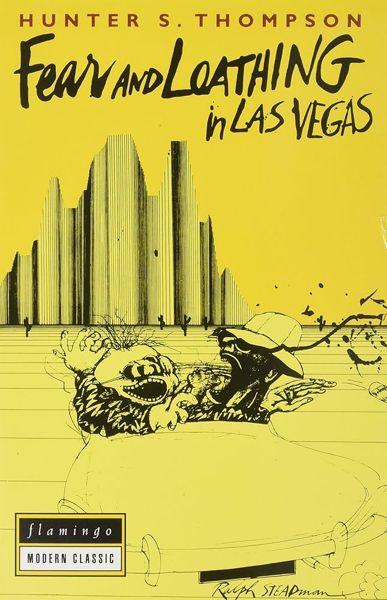
The book spawned a new literary form. Gonzo journalism took the journalist's subjectivity — the thing that newspapers had always pretended was absent — and made it the entire subject. The story was never really about the race, or the event, or the politician. The story was about what it felt like to watch the race, attend the event, stand in the room with the politician. The writer's interiority was the content.
Thompson was serious about this in ways that are now largely forgotten. He genuinely believed that American democracy was collapsing, and that the only honest way to report on that collapse was to refuse the conventions of objectivity that had helped conceal it. The drugs and the guns and the violence of the prose were not affectations. They were the appropriate register for the material.
Alexander Boris de Pfeffel Johnson – known to the rest of us as Boris Johnson – read Thompson at Oxford. Here he is enjoying a drink.
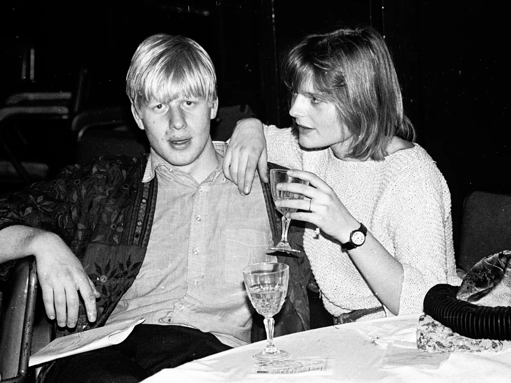
He understood the form immediately, in the way that very intelligent people sometimes understand forms without understanding their purpose. He became the Brussels correspondent for the Daily Telegraph in 1989, and from that posting he did something genuinely novel: he applied gonzo to politics.
The pieces he filed were not really about EU regulations. They were about Johnson at EU summits — the absurdity of it, the grandeur of it, the sense that here was a serious young man from a serious family forced to sit through interminable meetings about fish quotas and straight bananas. He cast himself as the bewildered English everyman, which required ignoring the fact that he had been educated at Eton and Balliol. The persona was the story. The story was the persona.
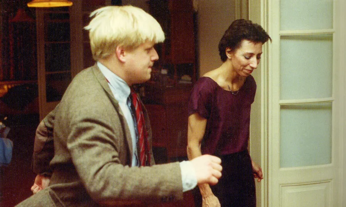
He had taken Thompson's insight — that the journalist's subjectivity was the content — and evacuated it of Thompson's anguish. What remained was the technique without the honesty.
The effect on British political journalism was significant and mostly catastrophic. A generation of writers began doing versions of the same thing. They attended party conferences and wrote not about policy but about the experience of attending party conferences — the terrible wine, the strange hierarchies, the journalists drinking with the MPs at midnight. The Spectator under Johnson's editorship became a clubhouse for this sensibility. Being clever and funny about politics gradually replaced being accurate about politics as the primary virtue.
One of my favourite examples is of the writer Will Self. Here is what Self looks like.
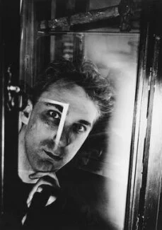
In 1997, he flew on John Major's campaign plane and later wrote that he had taken heroin in the bathroom. This was either true or a very effective lie, and in the gonzo tradition, the distinction barely mattered. The story was about Self on the plane, not Major's campaign.
What Thompson had used to expose the corruption of power, Johnson and his imitators used to make power entertaining. There is a profound difference. Thompson's subjectivity was in service of an argument about America. Johnson's subjectivity was in service of Johnson. The reader laughed, which felt like being let into a secret, which felt like sophistication, which turned out, in the end, to be something closer to being managed.
Johnson used his popularity to run for office and was elected prime minister in 2019. In government, his techniques did not stop. The press conferences were performances. The big moments — the Brexit bus, the prorogation, the parties during lockdown — were all, in some sense, gonzo. They were events that only made sense as the story of how Johnson experienced them, narrated with the right amount of self-deprecating chaos. The question of what was actually happening to the country was always slightly off to the side of the frame.
Thompson shot himself in 2005, having told his wife he was tired. He had spent forty years being genuinely afraid of what America was becoming. In 2005 in Woody Creek, Hunter S. Thompson's ashes were blasted from a cannon by his friend Johnny Depp, who had played him in film of Fear and Loathing in Las Vegas directed by Terry Gilliam. The cannon represented his final wish for a "Gonzo" send-off.
Johnson retired to write a biography of Shakespeare and is reported to earn four hundred thousand pounds per speech. His memoir, when it arrives, will almost certainly be very funny.
The form Thompson invented in anguish, Johnson perfected as entertainment. The imitators Johnson inspired — the generation of writers who learned that irony and self-involvement were sufficient substitutes for genuine understanding — are now the people who explain politics to the British public. They are very good at describing the atmosphere in the room. They are less good at describing what the room is for.
What both Blair and Johnson discovered, in their different ways, was that the conventions designed to hold power accountable — elections, journalism, the state itself — could be made to serve power instead, if you were clever enough about it, and if you understood that most people would rather be entertained than alarmed.
Sterling knew this too. He just used guns.
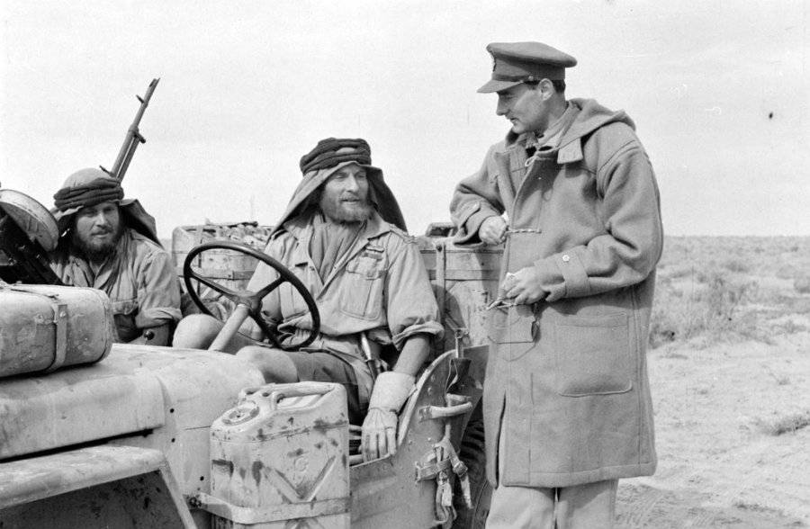
---------------
And that leads us now to the strange time in politics we live under.
For most of the twentieth century, there was an unspoken agreement that governed British public life. It didn't need to be written down. Everyone who mattered understood it instinctively, because everyone who mattered had been educated in the same small set of institutions and had absorbed it through the walls.
The agreement was this: that power would maintain the appearance of being constrained. Politicians would pretend that elections bound them. Journalists would pretend their job was to inform the public rather than to perform themselves. Public figures who left office or were removed from it would withdraw to a decent distance — observing a period of silence of at least five years that implied the whole enterprise had been about something other than personal advancement.
Tony Blair understood this agreement and was rarely seen for 5 years after he left office. He reappeared in 2015 to warn against electing Corbyn and advance his own ideas about Brexit. He also largely respected the separation while he was prime minister. He was a personality, certainly — you always knew it was Blair — but the performance respected the frame. He spoke as prime minister, not as Tony. When he left in 2007, he waited. He took the fees and gave the speeches but did it quietly, in the way that men of his class have always arranged their affairs: visibly, but not provocatively. He was influencing things. Of course he was. But he kept the convention, and the convention was the thing.
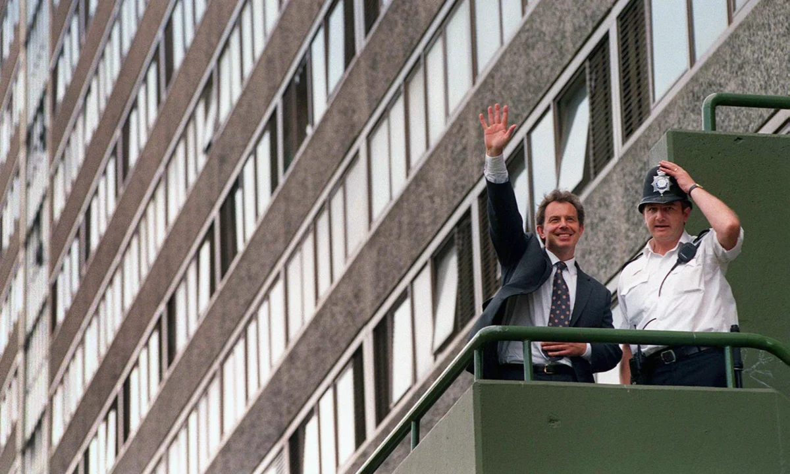
What Blair understood was that the convention was not a constraint on his power. It was his power's most effective tool. It kept the public in a condition of believing the system worked. And a public that believed the system worked was a manageable public. It would vote. It would write to its MP. It would feel, periodically, that it had achieved something.
Boris Johnson did not understand this agreement, or understood it and did not care, which amounts to the same thing in practice.
He prorogued parliament and the Supreme Court told him it was unlawful, and he treated this as a narrative beat rather than a reckoning. He was found to have misled parliament and responded with a document that was, in its way, a masterpiece of the form: furious, funny, self-pitying, and utterly without remorse.
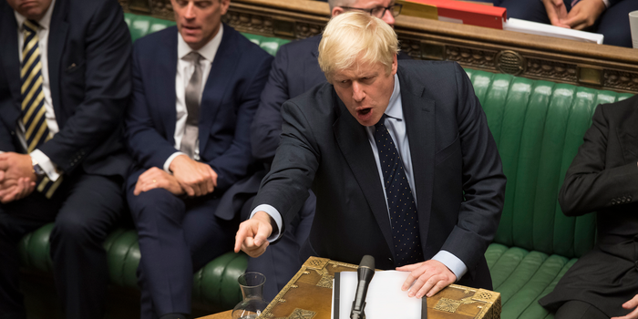
Finally, during lockdown, when the rest of the country was forbidden from seeing their dying parents, Downing Street held parties. Johnson did not resign. He performed contrition, then continued.
When he was eventually removed, he did not vanish. He wrote columns. He gave interviews. He attended the Commons to cause trouble. He announced a television deal. The convention — the withdrawal, the silence, the performance of having served something larger than oneself — simply did not exist for him. And he proceeded as though it had never existed.
What he had demonstrated, live and in public, was that the convention had never been enforced by anything except the agreement of the people inside the system to enforce it. There was no law. There was no mechanism. There was only the understanding that one did not do these things, and Johnson did not share the understanding.

Increasingly, we see the same now happening beyond politics. Nowhere is this more illustrative than the BBC News.
The BBC correspondent used to be a voice without a face. The information was the thing, not the person delivering it. You were not supposed to know their politics, their personality, their brand.
Now every BBC political journalist maintains a social media presence that is essentially a personal publicity operation. They have takes. They have feuds. They have followers who follow them specifically — for their voice, their persona, their particular flavour of knowingness. They are, in the most precise sense, doing what Johnson did in Brussels in 1989: making themselves the story, using the institution's credibility as a platform for a personal performance.
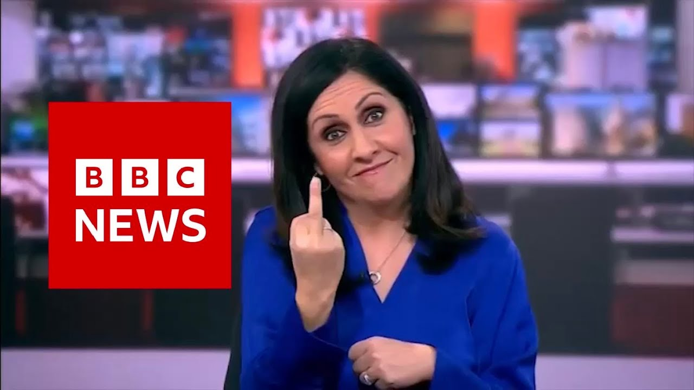
Both journlists and politicians had always known the accountability was partly theatre. Now, for the first time, they had stopped bothering to keep this from the audience.
But in a strange way, this shift is an opportunity for us all. Through the reckless actions of our rulers, we can for the first time see things properly. The feeling we had that the system worked is no more. The comfort of believing that elections changed things, that journalism held power to account, that the rule of law applied equally.
But in a strange way, this shift is an opportunity for us all. Through the reckless actions of our rulers, we can for the first time see things properly. The feeling we had that the system worked is no more. The comfort of believing that elections changed things, that journalism held power to account, that the rule of law applied equally. They were useful primarily to those who wanted to control us. A population that believes it has agency through legitimate channels will use those channels. The channels — voting, protesting, petitioning — are not nothing. But they are also managed. The things that are genuinely dangerous to concentrated power are generally not available through the approved channels, which is precisely why the approved channels are approved.
Johnson broke the spell. Not intentionally. He was trying to remain prime minister. But the consequence of his inability to maintain the convention was that the convention itself became visible. And once a convention becomes visible, it stops working.
People who had believed elections were the mechanism through which they governed themselves watched a prime minister survive being found to have misled parliament, survive a police fine for breaking his own laws, and survive on the basis of nothing but his party's refusal to remove him. Then they watched him leave, collect an advance, charge large fees for speeches, and return to public comment within months. None of this was illegal. Almost none of it was even unprecedented. What was new was that it was all happening in full view, without any of the usual management.
The class Blair and Johnson are a part of has run Britain for centuries. Unlike the scenes we see in Iran (or with ICE in the US), they have not had to rule through too much brute force. It did so through the management of belief — the belief that the system was open, that merit was rewarded, that power answered to the people. After all, Johnson learnt more than just Latin and classics at Eton and Balliol. He learnt, in the way these institutions teach through example rather than instruction, that the rules were for other people. He simply forgot that the system required him not to show this.
So in a strange way, we ought to be grateful to Johnson and Blair. Through their actions, the spell has been broken and the public can plainly see what is going on.
The revelation is that the powerful in the UK have always been vulnerable; that is why our rulers work so hard to manage what people believe about it. The revelation is that the specific mechanisms through which people were told they could challenge power were always partially theatrical. This is not the same as saying no mechanism works. It is saying that the approved mechanisms were approved for a reason.
The history of actual change — the franchise, the eight-hour day, the NHS, the end of formal empire — is not primarily a history of people writing to their MPs. It is a history of people who understood that power was concentrated, organised outside the approved channels, and made the cost of the status quo higher than the cost of change. They could do this, in part, because they believed it was possible. The managed belief that the approved channels were sufficient had always been the main obstacle.
If you want to understand why Noam Chomsky was beloved by Jeffrey Epstein, then you must realise his pessimistic message that nothing can be done is now the best strategy for vulnerable elites today. Without the conventions in place that kept people voluntarily assisting and supporting the elites, they have to devote enormous resources and funding toward encouraging us all that nothing can be done. Nothing can be done.
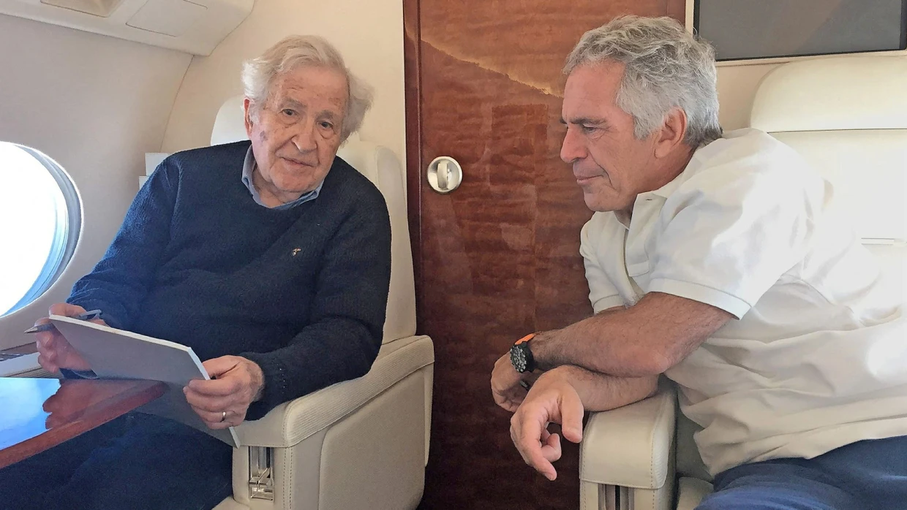
Chomksky had a dangerous readership. But his was only one message among other, more hopeful, leftwing outlooks. So Epstein had an idea to fund Chomsky's work and to grant him as large a platform among the left as he could. The more the left looked up to his word to guide their behaviour, the more they would absorb his pessimism about change in the West and the less they would do to threaten the power of Epstein and his associates.
Johnson, in his vanity and his recklessness and his total inability to maintain the performance his class had perfected over generations, stripped that obstacle away. He showed a generation of people through the spectacle of his own behaviour that the system they had been taught to trust had always been, in important ways, a performance staged for their benefit.
The opportunity to do something about our predicament is now real, and the tactics our rulers are using to infiltrate and control the messaging on the left is one of the most interesting stories of today. Just recall the infiltration of the US authorities into the highest ranks of the Black Panthers and you'll get a sense of the severity of what states will do to thwart their enemies – including marry and have a child with a Black Panther leader just to remain undercover.
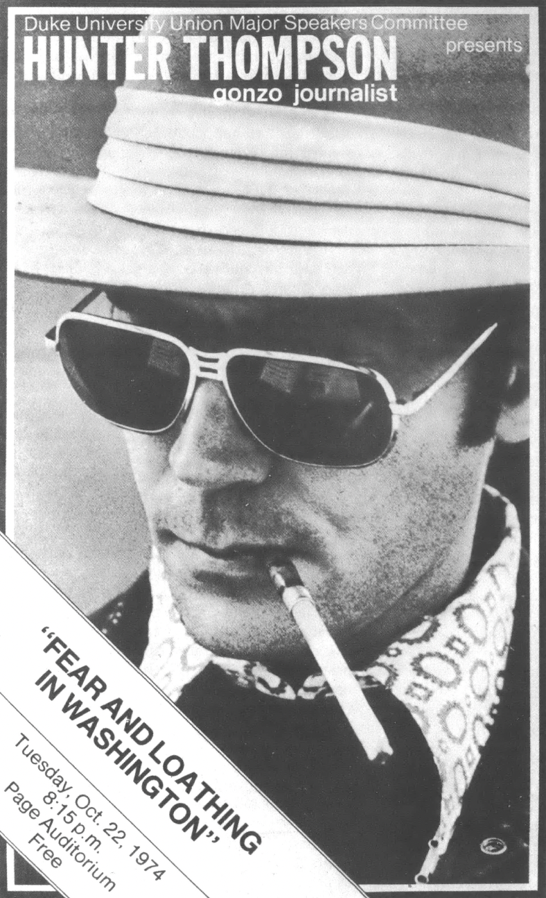
Thompson spent his whole career trying to show Americans that their democracy was theatre. Nobody really listened. They thought he was entertaining. Now they have a reality TV show host as their prime minister, and today he is tweeting that "a whole cilisation will die tonight" if Iran does not make a deal with him.
If there has ever been an opportunity to see the naked nastiness of politics in all its glory, today is that day.